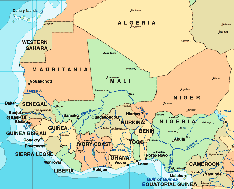

Africa is an enormous continent which contains some fifty-three countries and some of the world's most extensive deserts and rainforests. It is where humans first developed. Great civilizations flourished on the continent from the southern interior through the north. Dynastic Egypt dominated its region for some 5,000 years. Later, northern Africa would play an important role in the development of Western Christianity and for Islam after the eight century.
The Sahara desert serves to divide the continent. North of the Sahara is populated by Moslem cultures, while south of it is found the various religions of a large number of ethnic groups who all differ in their traditional political, social, and musical systems. Many came to Africa from elsewhere for economic, religious, and other reasons. As a result, there has long been a mixing (syncretic = mixed) of musics between various cultures in Africa. Syncretic ensembles and mixed musics occurred and cross-fertilized not only between different cultures on the continent, but also between various African cultures and other cultures in Europe or Latin America.
West Africa, upon whose music we will focus here, is that area that lies under the Western 'hump' of Africa from the Gold Coast down through Nigeria.